Transmission Disassembly
Transmission DisassemblyClutch Housing:
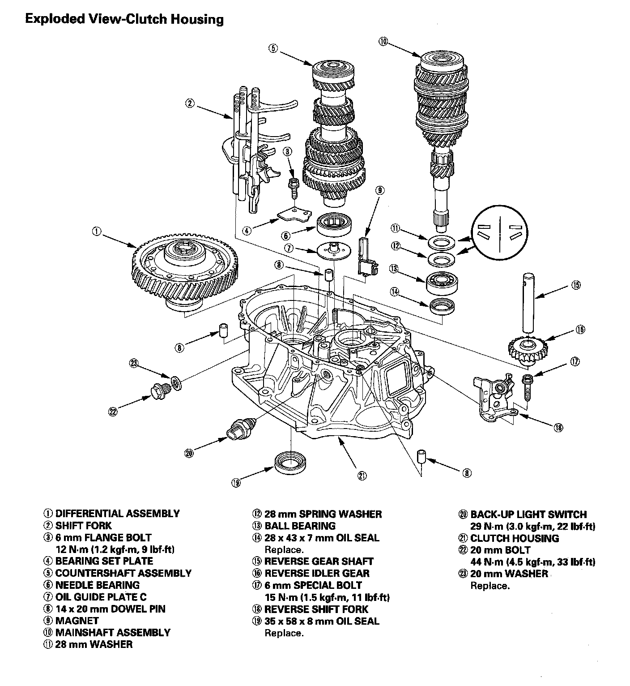
Transmission Housing:
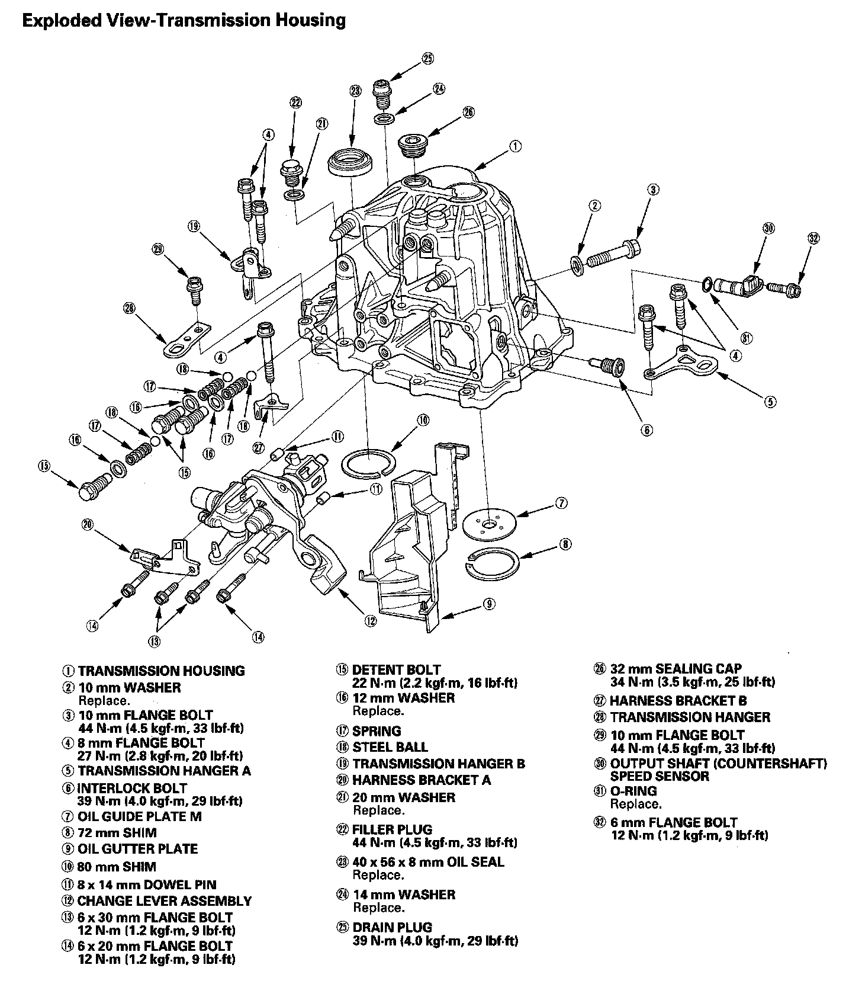
NOTE: Place the clutch housing on two pieces of wood thick enough to keep the mainshaft from hitting the workbench.
1. Remove the detent bolts (A), springs, steel balls, and the back-up light switch (B). Then remove the transmission hanger (C).
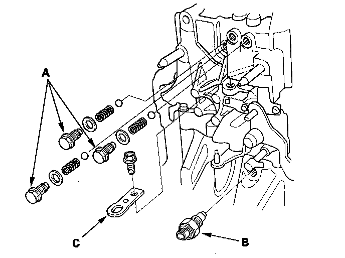
2. Remove the 20 mm bolt (A) and the 20 mm washer (B).
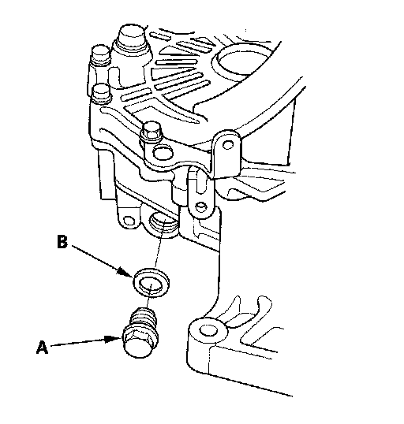
3. Remove the interlock bolt (B), change lever assembly (C), 8 x 14 mm dowel pins (D), and harness bracket A.
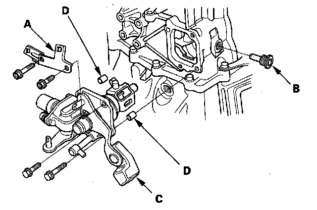
4. Remove the drain plug (A), the filler plug (B), the 10 mm flange bolt (C), the output shaft (countershaft) speed sensor (D), and the O-ring (E).
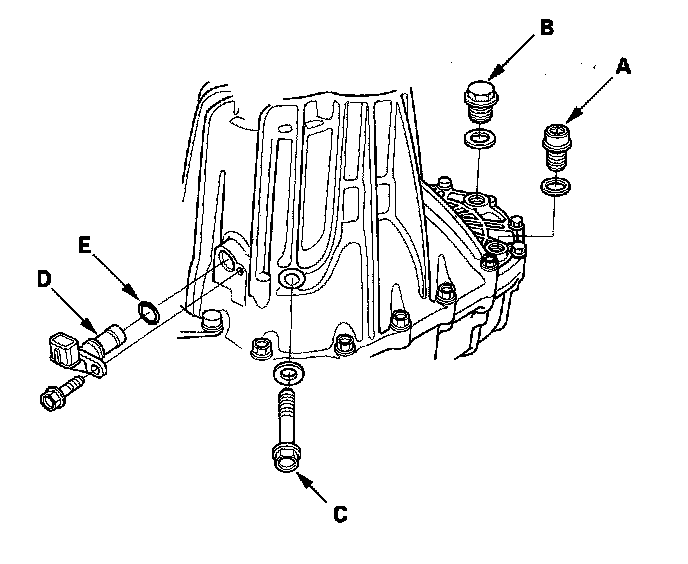
5. Remove the 8 mm flange bolts in a crisscross pattern in several steps.
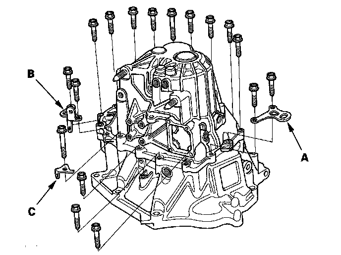
6. Remove the transmission hanger A, the transmission hanger B, and the harness bracket (C).
7. Remove the 32 mm sealing cap (A).
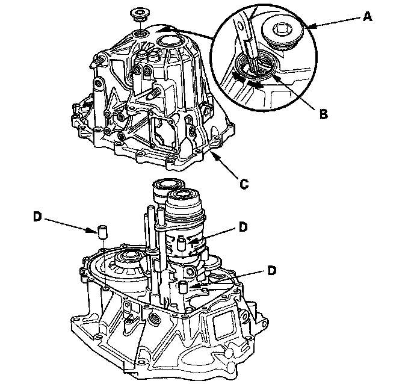
8. Expand the 72 mm snap ring (B) on the countershaft ball bearing, and remove it from the groove using a pair of snap ring pliers.
9. Remove the transmission housing (C) and the three 14 x 20 mm dowel pins (D).
10. Remove the reverse idler gear (A) and the reverse gear shaft (B).
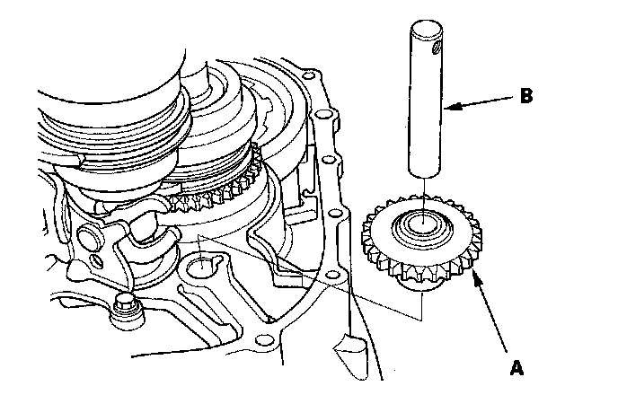
11. Remove the reverse shift fork.
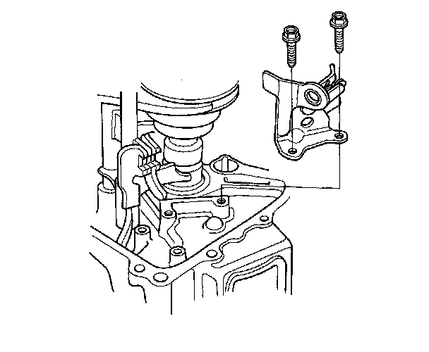
12. Apply tape to the mainshaft splines to protect the seal, then remove the mainshaft assembly (A) and countershaft assembly (B) with the shift forks (C) from the clutch housing (D).
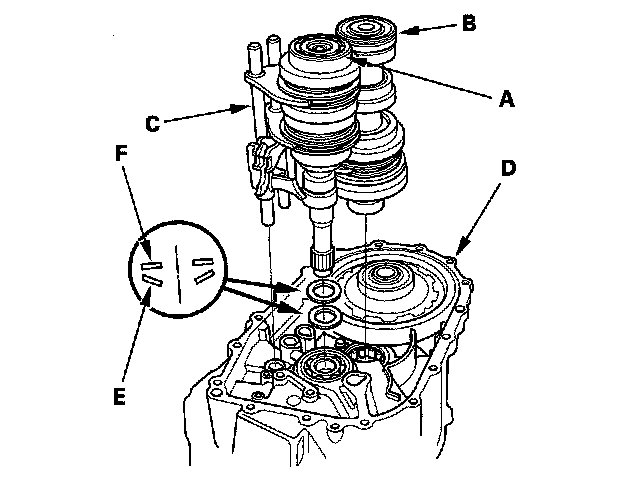
13. Remove the 28 mm spring washer (E) and 28 mm washer (F).
14. Remove the differential assembly (A) and the magnet (B).
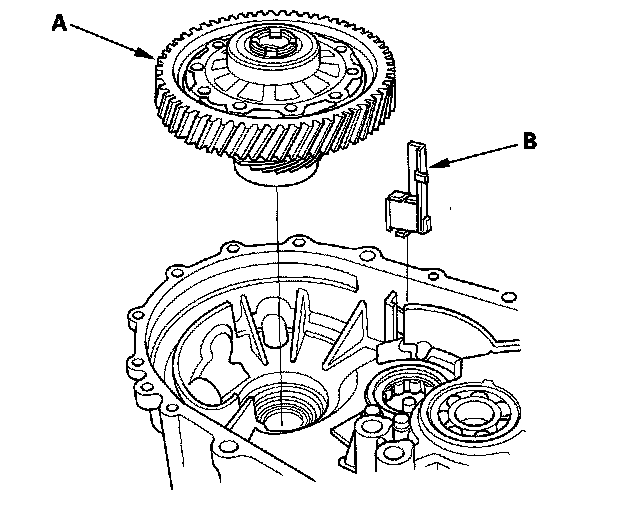
15. Remove the oil gutter plate (A), the oil guide plate and the 72 mm shim (B).
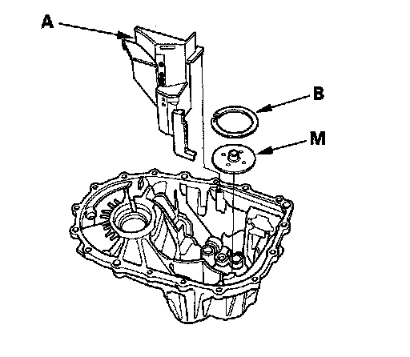